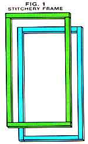
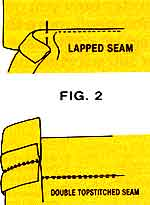
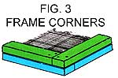
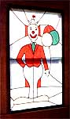

Here's a bit of do-it-yourself "magic" that can make an ugly view look bright and beautiful.
We like to think of windows as the eyes of a house . . . gazing out over a beautiful landscape or fascinating city scene that soothes or stimulates our spirits. But in today's crowded world, that's just not often the case. Frequently, homes or apartments have windows that overlook unattractive - if not downright ugly - views or, worse yet, that reveal neighboring living rooms or bedrooms with intrusive clarity. To cope with the problem, people resort to such things as permanently drawn curtains, shades, "glass curtains", frosted glass, or painstakingly applied adhesive gel. There's another choice available, though, and it should have special appeal to needleworkers and crafts people. It's what I call window stitchery - fabric "stained glass" that can be made permanent or portable.
Window stitchery provides a unique solution to the problem of dealing with an unsightly view. It's inexpensive, but it does require time and a moderate amount of skill in such things as sketching a pattern; tracing, cutting, and sewing the component fabric pieces; and stretching the finished work over a wooden frame to be inserted in a window. But oh, the lovely results! Like magic, your fabric picture screens out the view, replacing it with a back-lit design made especially for the room it occupies. In addition, your stitchery can act as a shade for an overbright area and provide a certain amount of insulation. It has some of the character of true stained glass without any of the cost or difficulty involved in the cutting of glass and soldering of metals . . . and it allows for great individuality of design.
BEGIN WITH A FRAME
Most displays of graphic art begin with the picture, but in window stitchery you begin with the frame. You'll need eight strips of lath or molding, 1" wide and 1/2" thick, cut to the size of your window. Because glazing frames are often out of square, you'll need to measure all four sides separately. Lay the measuring tape along the casement where you plan to have the stitchery touch. You'll need two strips of wood for each of the four sides, the first strip equal in length to the exact measurement of the side, and the second strip 2" shorter (see Fig. 1). You can either cut these yourself or have it done at your local lumber supplier or millwork company. Be sure to label each piece clearly: On the rough side (which will be covered when the framing is finished), write "Top-Long", "Top-Short", and so on.
SCHEME, PLOT, AND PURCHASE
The next step is to create the picture design. For this you'll need a large sheet of paper (brown wrapping paper, newspaper, or opened grocery bags will do), some masking tape, a pencil, and a black marker pen. Spread the paper on the floor or a large tabletop, and on it lay four of the wooden strips, the long top and bottom and the short right and left sides, to make the window shape. Tape the strips together at the corners, then use your marker to draw the inside dimensions of the frame onto the paper. The "stained glass" design should fill the space completely.
Now, set the wooden strips aside while you work on the picture. Use a pencil to sketch the design of your choice onto the paper, extending it about 1" beyond the marked frame dimensions. For ease of construction and a look of elegance, keep the drawing as clear and simple as possible. Once the design is drawn to your satisfaction, go over the penciled lines with the black marker. Number or letter each section of the drawing, then use crayons or other colored markers to indicate the hues you want in each section.
With that done, it's time to begin tracing, cutting, and sewing. [ EDITOR'S NOTE: The following procedure imitates, to some degree, the manner in which stained-glass panels are put together. Another method, which some people may find easier, is described in the accompanying sidebar.] Using heavy tracing paper or fine, sturdy muslin, trace the individual sections of your design. Now, add a cutting line 1" beyond each outline. Mark each section with the number or letter that indicates its place in the design and cut it out.
Next, sort the various pattern pieces by color. Lay out all those of the same hue as if they were on a length of 36" or 45" fabric, putting the pieces close together but not overlapping, and measure the amount of space they take up. This will give you an idea of how much fabric you'll need for each color.
SELECTING A JOINER
In real stained-glass windows or panels, sections of glass are joined together with strips of metal. In window stitchery, the pieces of fabric are sewn together, and then black, silver, or color-coordinated strips of bias binding are stitched over the seams to conceal them. A measuring wheel or a cloth tape measure can be used to figure the amount of binding required; just add several inches to the total - about 1" per each separate strip used - to allow for overlapping the ends.
Since the picture will be seen from the inside and the outside of the house, you may want it to be reversible. In that case, you should double the amount of binding you purchase to allow for covering the seam lines on the reverse side.
After you've selected the binding you'll use, you may want to paint the wooden frame strips a matching color for a more finished appearance.
CONSTRUCTING THE PICTURE
With all your materials on hand, lay the paper pattern pieces on the appropriate colored fabrics and pin them in place. Cut out the fabric sections and leave the patterns af fixed to them until you're ready to join the sections together.
Start by pinning and sewing the innermost sections. You can use lapped seams or double topstitched seams (see Fig. 2) if you're working with a sewing machine, or a round-and-round whipstitch if you're doing the picture by hand (trim the seam allowance to 1/2" before whipstitching, or there'll be too much fabric to deal with). Seams joined by machine should be folded before being stitched, or trimmed afterward so that a 1/2" bias binding strip will cover them completely.
Continue joining the picture sections until the entire design has been completed, ironing each seam as it's done. When all sections have been sewn together, begin covering the shortest seams with binding, remembering to allow enough length so each cut end can be covered by another binding strip where the two cross. Tackle the longest seams last and cover all the raw ends of the shorter binding strips with the final long strips. If your picture is to be reversible, repeat the process on the opposite side.
ALL TOGETHER NOW
With the painted (front) sides of the wooden frame pieces face down, lay the long top and bottom and the short right and left strips in place on top of your original design. Put a dab of glue on the butt ends where they join and tape the strips at the corners. Lay the completed stitchery on top of the frame with the edges overlapping the wood pieces. Then staple the upper edge to the top strip of wood at every point where the binding extends onto the frame. Gently stretch the picture down to the bottom of the frame, and staple the ends of all binding strips that run from top to bottom of the picture. Next, staple the ends of binding strips that run from one side of the picture to the other, alternating from the left to the right side of the frame as you work your way down the picture. Keep the tension as even as possible as you go. Last, staple the ends of short binding strips wherever they extend over the wooden frame.
Once the binding is secured, proceed in the same manner with the fabric. When you're done, you can reinforce the staples by gluing the fabric edges to the frame. Finally, trim off any excess material.
Now, take the remaining four wood strips and lay them in place, face up, on top of the stitchery. The corners of the two frame sets will overlap (Fig. 3). Nail the two sets of frames together at the ends of the strips as shown, using 1/2" or 3/8" finishing nails. Wood putty will fill and cover any unwanted marks or crevices: Apply it, let it dry, sand it smooth, and paint over it if it's in an area that will show.
As a final touch, spray the stitchery with a water-and-grime repellent (test the substance first on swatches of leftover fabric to be sure it's safe to use). This protection will allow you to clean the picture as needed.
INSTALLING THE STITCHERY
Some windows will allow you to simply press the stitchery in place, while others will force you to use a few nails. If there's no stress on the picture, it'll need little more than to be tacked to the window casement. If, on the other hand, you want to be able to open and close the window that's being covered, just attach the stitchery with hinges at the top or along one side. A latch or similar closure will hold the frame shut when the window isn't in use.
CREATIVE WIZARDRY
Stitchery may not be the answer for every person or every problem window, but it does have the power to transform an ugly view into something bright, beautiful, and unique. It costs little, and you don't have to be an expert at drawing or sewing to make it work!
MOTHER'S Method
We wanted to produce a window stitchery in order to test the construction techniques presented here and to have a finished piece to photograph. Accordingly, the project was put in the capable hands of craftswoman Pamela Phillips, who designed and stitched the clown picture shown above . . . and in the process devised what she felt was a faster and easier way of doing the job.
Pam's technique reflects her quilting experience: She saw the stitchery as an appliqué project. She began with the purchase of four panels of sheer drapery fabric. Three of these were used as color sections in the design, while the other, a rectangle larger than the window frame, was marked to size and used as a background for the entire picture.
After creating the basic design, Pam traced it onto a clean sheet of paper, using heavy marker lines. Instead of cutting out individual paper pattern pieces for each of the picture's sections, she used washable fabric marker to trace each segment directly onto the appropriate colored material. (The heavy marker lines showed through the fabrics without difficulty.) Pam then cut the pieces out, leaving about a 1/2" seam allowance around the edges.
Referring to her basic drawing, Pam then arranged the colored fabric pieces on the background material and pinned them in place. Next, she appliqued the pieces onto the background, using the zigzag stitch on her sewing machine and following the seam lines she had traced. With that done, she used a pair of small, sharp scissors to trim away the excess material around the outlines. The picture was then made reversible by flipping it over and trimming away the background fabric to allow the colored sections to show clearly. The binding was applied in the same manner as described in the article, except that marker lines were drawn - and binding applied - on some of the open background areas to imitate stained-glass leading.
Although this technique doesn't follow the piecet-o-piece joinery of the original method, which is closer to genuine stained-glass methods, Pam feels it makes complicated designs and curved seams easier to handle, eliminates the puckering that could occur so readily with piecing, and results in a smoother seam line on which to sew the binding trim.
Pam estimated that the entire operation, from start to finish, took her about 17 hours (including the time spent shopping for supplies) and cost approximately $7.00 (not including wood or paint, both of which she had on hand).
|
 |
 |
 |
|
 |
|
|